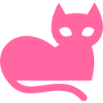

Bonjour je suis Lola Navarro
Junior UX/UI Designer
Étudiante à l’IUT de Lannion en 3e année de BUT MMI (Métiers du Multimédia et de l’Internet)
Victoire. Je suis stagiaire Community Manager à la Chambre d'Agriculture de Bretagne !

Bientôt titulaire d'un Bac+3 Métiers du multimédia et de l'Internet, j'ai l'ambition de me spécialiser dans le domaine du design et de l'UX-UI Design.
Passionnée par l'anglais, je compte ensuite développer ma carrière à l'internationale.
Poursuivant bientôt mes études dans un Master en Design, je recherche à constamment enrichir mes compétences et devenir une designeuse de talent.
Poursuivant bientôt mes études dans un Master en Design, je recherche à constamment enrichir mes compétences et devenir une designeuse de talent.
Permis B
Véhiculée
Langues
“C’est en faisant des erreurs que l’on apprend.”
- Gaston Bachelard
Mes passions
Musique
- Piano
- Guitare
- Orchestre
Design
- Traditionnel
- Numérique
- Affiches, Logo, ...
Voyage
- France
- Espagne
- Japon, Italie, ...

Animaux/Nature
- Balade en nature
- Amour pour les animaux
- Bénévolat écologique
Jeux vidéos
- Console, PC
- Storytelling, Lore
- Game Design
Automobile
- Passionnées par les sportcar
- Jdm
- Motos